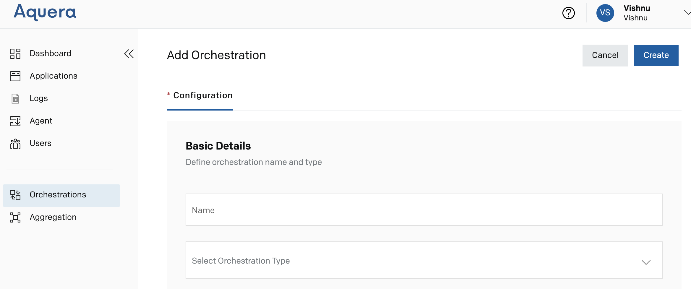
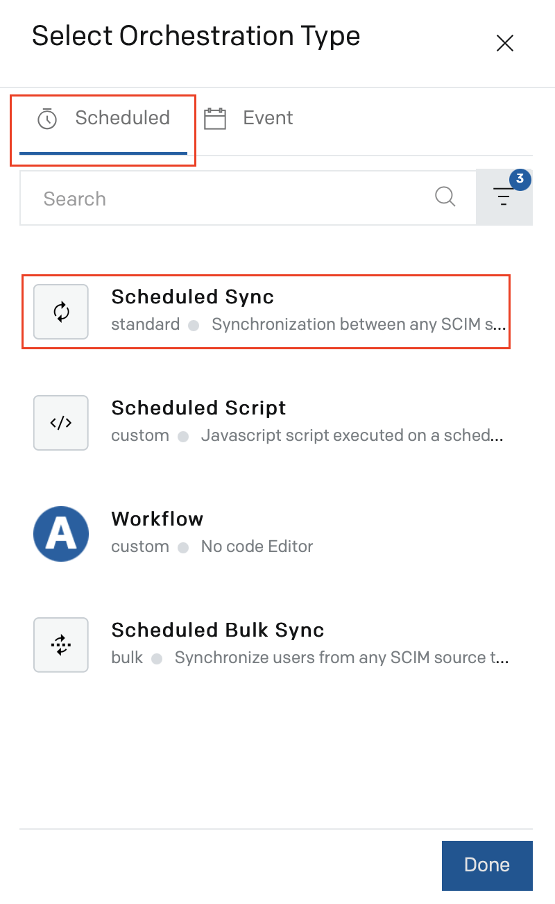
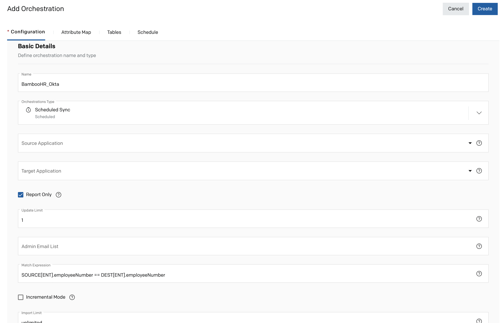
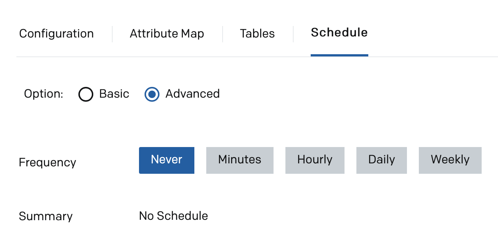
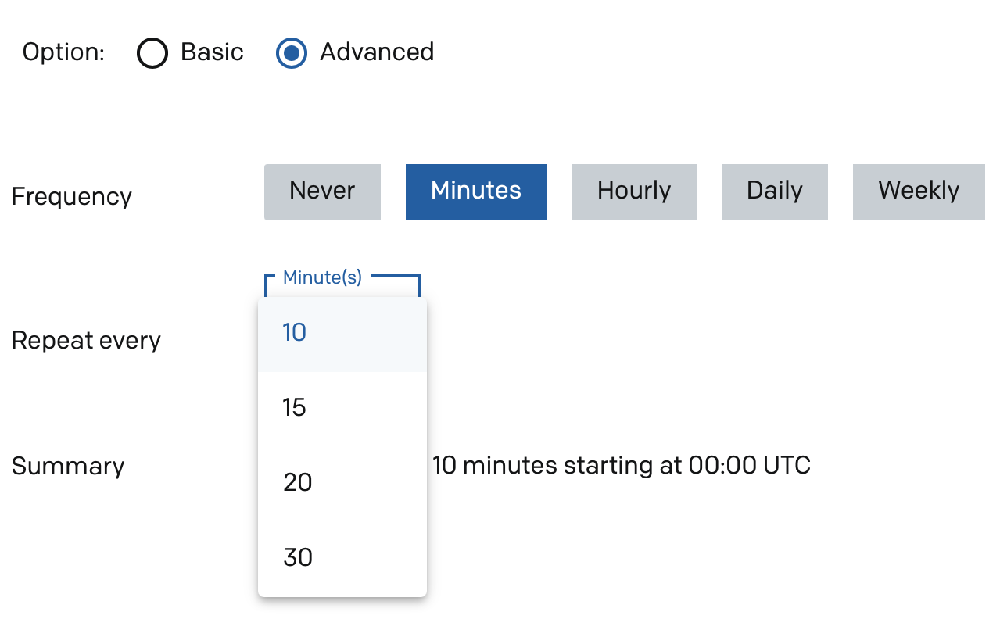
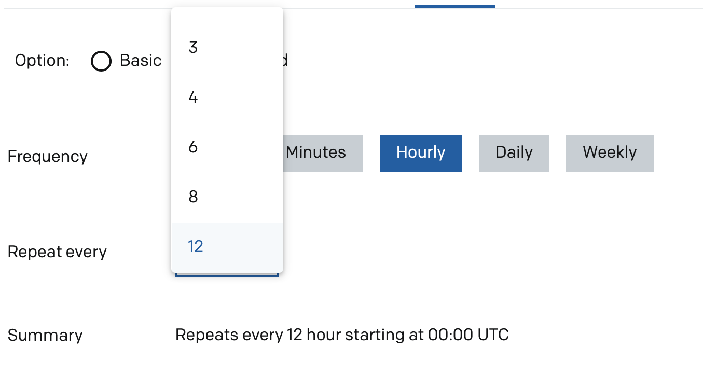
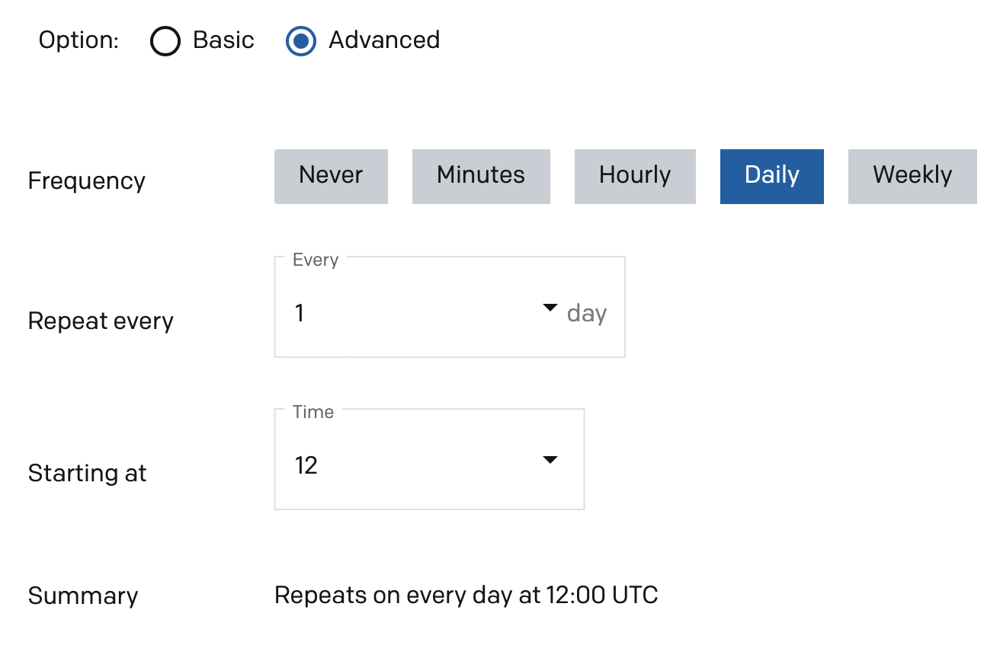
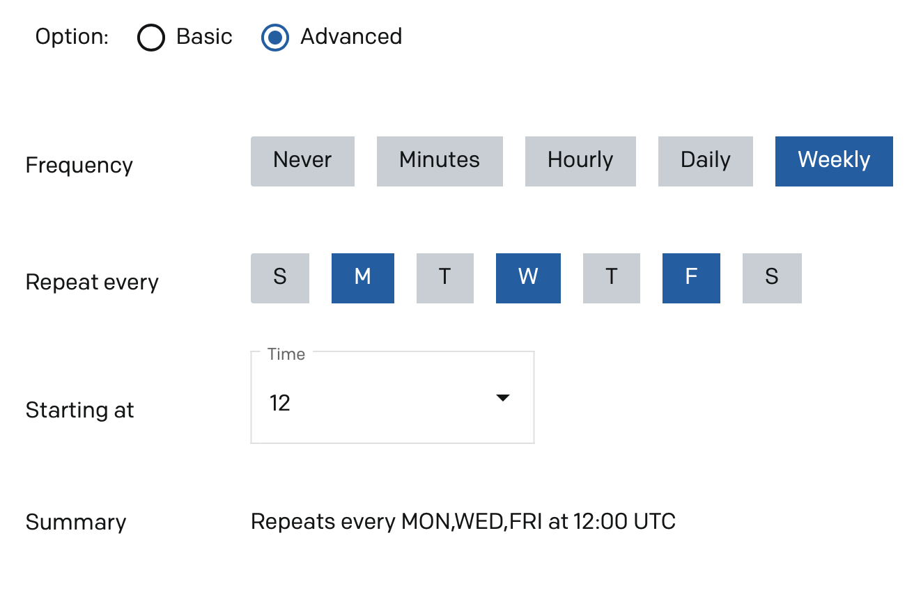

Scheduled Script Orchestration Guide
Overview
This user guide explains how you can set up a Scheduled Script orchestration in Aquera Admin console.
In Scheduled Script orchestration, you must write javascripts to perform user operations across two applications. The orchestration runs as per the defined orchestration schedule.
Jump to
Setting Up the Scheduled Script Orchestration
This procedure describes how to set up the scheduled script orchestration. To explain the process, we consider BambooHR as the Source application and Okta as the Target application.
Prerequisites
Make sure that the source (BambooHR) and target (Okta) applications are added and configured correctly in Aquera Admin, before creating the orchestration. Refer to the corresponding configuration guides for details.
Creating the Orchestration
- Log in to the Aquera Admin console.
- Navigate to Orchestrations and click Create Orchestration. The Add Orchestration page is displayed.

- Enter a Name for the orchestration, for example, BambooHR_Okta.
- Click the Select Orchestration Type drop-down. A pop-up window is displayed.
- Select Scheduled Sync from the Scheduled tab of the pop-up window.

- Click Done. The Add Orchestration page is displayed with the fields to configure the orchestration. Also, additional tabs are displayed on the page.

The following procedures are involved in the Scheduled Sync orchestration setup:
- Configuration
- Mapping of Attributes
- Including Source Attribute Values Using Tables
- Setting Group Rules
- Scheduling the Orchestration Run
Configuration
- Enter the following details on the Configuration tab, as required:
Scheduling the Orchestration Run
You can set the frequency by which the orchestration must run.
- Click the Schedule tab.

You can either select a basic schedule or set an advanced schedule.
Basic Schedule
You can select a frequency by which the orchestration must run, from a pre-defined list of frequencies ranging from 15 minutes to 24 hours.

Note: If you select Never, the orchestration never runs.
Advanced Schedule

- Select Never if you do not want the orchestration to run.
- Select Minutes to schedule the orchestration to run every X minutes, where you need to select X from a drop-down list.

- Select Hourly to schedule the orchestration to run every X hours, where you need to select X from a drop-down list.

- Select Daily to schedule the orchestration to run every X days at a specific time, where you need to select X and the time from drop down lists.

- Select Weekly to schedule the orchestration to run on specific days of a week at a specific time.

- Click Save Changes to save the orchestration setup.